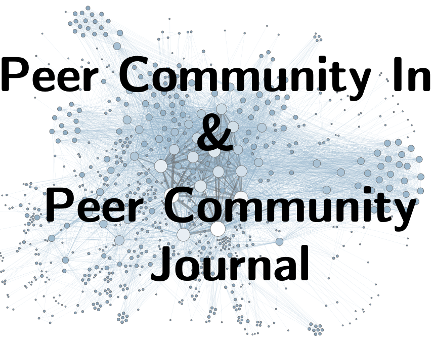
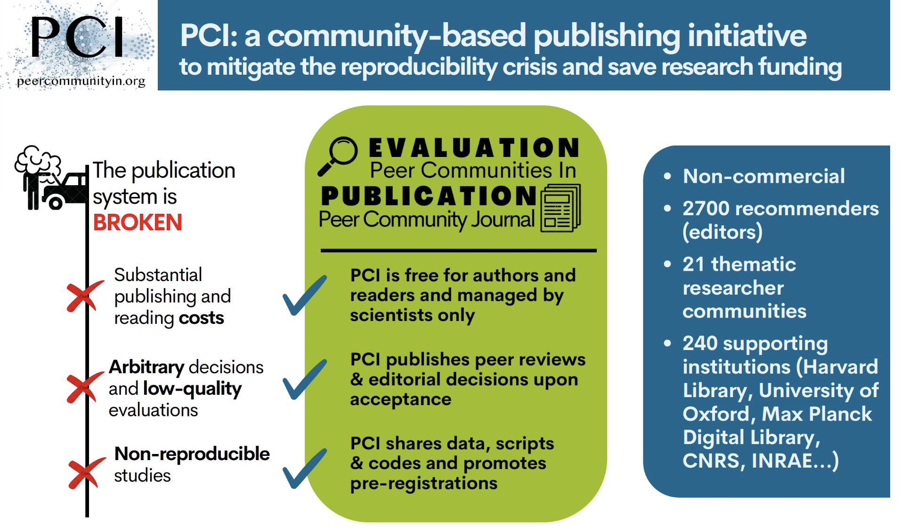
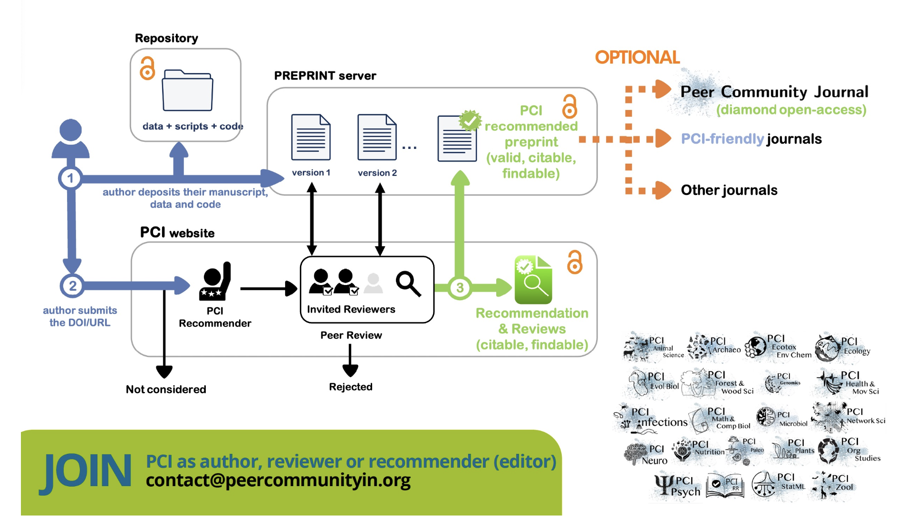
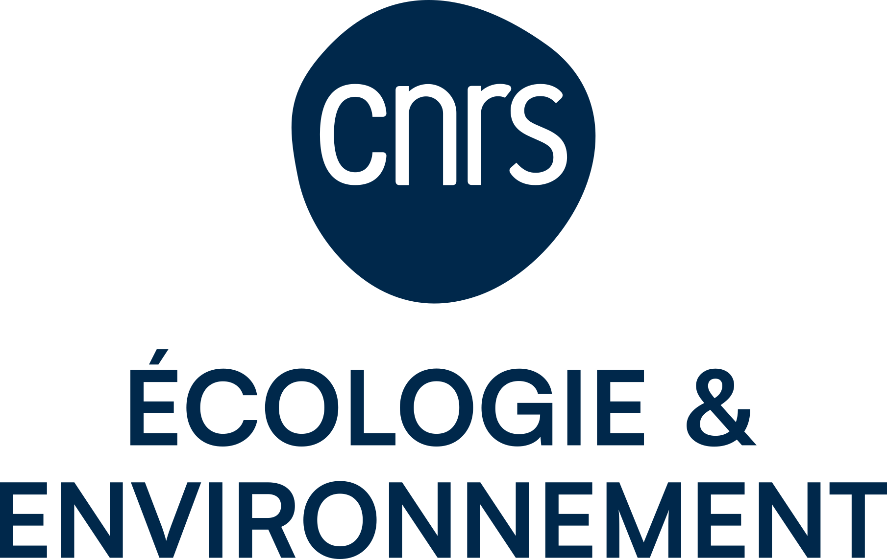
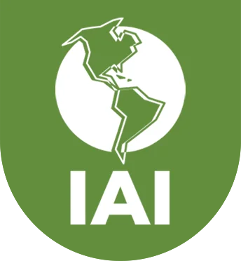
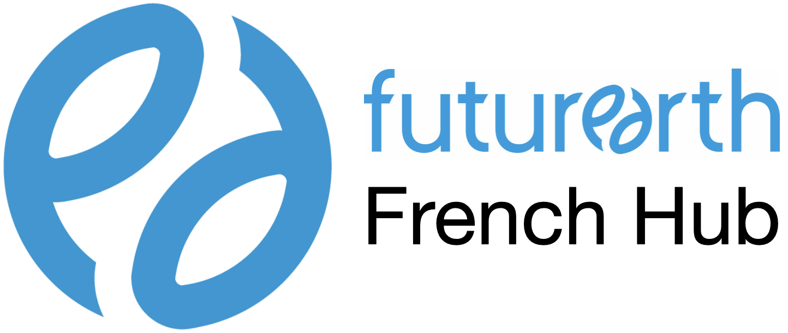

PCI sustainability
Development of a Peer Community in Sustainability

In a nutshell
PCI stands for Peer Community In ; is it a system ran by scientists for scientists, for evaluating and recommending research papers. It’s detailed here:


Existing PCIs are disciplinary ; we aim at creating a transdisciplinary PCI to offer a free, open, high-quality publication avenue for sustainability research without paywalls.
To launch a new PCI, we need your support : sign in your interest in participating in PCI Sustainability here ! You can pledge to contribute as a future author and/or recommender. We need 50 pledges to launch.
Ambition and Scope of PCI Sustainability
PCI Sustainability is a project of thematic PCI, a peer-review platform for evaluating and recommending manuscripts in the field of sustainability research. The goal of sustainability research is to bridge scientific knowledge and action towards desirable futures for both humanity and the environment it lives in. PCI sustainability is intrinsically transdisciplinary and is therefore quite different from the other PCI’s in the fact that recommenders come from a wide variety of disciplines. PCI Sustainability is a place to submit your research on transformative transdisciplinary research in sustainability science at the interface between science and society. Contributions on the practice and challenges of sustainability science are welcome. While inclusivity and plurality are core elements of the field’s ethos, places to publish quality peer-reviewed sustainability research in diamond open access are solely lacking. PCI Sustainability, in combination with Peer Community Journal, is aimed to fill that gap.
Why it matters
Together, Peer Community In and Peer Community Journal provide a publishing ecosystem that is free to read, free to publish, transparent, community-governed, and focused on scientific quality.
It is therefore well aligned with the ethos of transdisciplinary sustainability research, where inclusivity, transparency, equity, and societal impact are central objectives.
Here are some key benefits :
Removes financial barriers for both authors and readers, enabling participation regardless of institutional or national resources.
Supports equitable knowledge dissemination, particularly for researchers from low- and middle-income countries, Indigenous organizations, NGOs, and civil society partners.
Ensures research outputs are immediately accessible to practitioners, policymakers, local communities, and environmental managers who often lack subscription access.
Facilitates co-production of knowledge by making scientific findings available to all partners involved in transdisciplinary research, not just academics.
Increases societal impact by allowing evidence to inform conservation, biodiversity, climate, and sustainability decisions without paywalls.
Aligns with the principles of Open Science, which are increasingly required by research funders and international initiatives.
Encourages transparency through open peer review (PCI), making the scientific evaluation process visible and accountable.
Reflects the collaborative ethos of sustainability science, where knowledge is considered a public good rather than a commercial product.
Improves trust in science by exposing reviewer comments and author responses, which helps non-academic stakeholders understand how conclusions were evaluated.
Emphasizes scientific quality over journal prestige, as PCI recommends articles based on rigorous peer review rather than impact factor.
Decouples peer review from commercial publishing, reducing dependence on profit-driven publication models.
Makes negative, confirmatory, and replication studies more visible, helping build reliable evidence for sustainability policy.
Fits well with Belmont Forum, Future Earth, IPBES, UNESCO and similar international initiatives, which emphasize open, inclusive, and actionable knowledge for addressing global environmental challenges.
Endorsements
The project of creating a PCI Sustainability is supported by: CNRS Ecology and Environment, the Belmont Forum, the Inter-American Institute for Global Change Research (IAI), the French Hub of Future Earth.




Contacts
Eric Pante (CNRS)